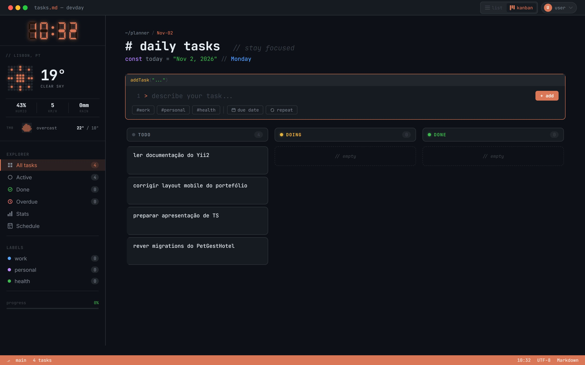

DevDay
Um planeador diário para programadores: tarefas em lista ou kanban, pomodoro e meteorologia.
Abrir o DevDay- Ano
- 2026
- Papel
- Projeto pessoal, sozinho
- Estado
- Online, GitHub Pages
- Tecnologias
- JavaScript, CSS, Firebase


O desafio
Queria organizar o dia de programação sem saltar entre o Notion, o Jira e listas soltas: uma página simples, sempre aberta, que guardasse as tarefas em qualquer dispositivo.
O que fiz
- Tarefas em lista ou em kanban com arrastar e largar, também no telemóvel.
- Pomodoro flutuante de 25/5 minutos, que se arrasta pelo ecrã.
- Datas de entrega com calendário próprio, filtros e aviso de atraso.
- Horário semanal, notas e estatísticas.
- Meteorologia ao vivo num widget de matriz de pontos.
Como funciona
JavaScript, HTML e CSS sem ferramentas de build nem dependências, dividido em módulos por funcionalidade. O Firebase Realtime Database sincroniza as tarefas entre dispositivos, com regras que só deixam cada pessoa ler os seus dados. A autenticação aceita Google, email ou convidado. A meteorologia vem da API Open-Meteo.
O que aprendi
Estruturar uma aplicação grande em JavaScript puro, sem framework, e escrever regras de segurança para uma base de dados que o browser acede diretamente.